|
Année de parution : 1999
Label : Xeric, Table Of The Elements
Référence catalogue : XER-LP-98, Sn 50
Format : 2xLP, Album
Captain Beefheart & The Magic Band
Grow Fins Vol. I: Just Got Back From The City / Electricity |
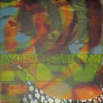Année de parution : 1992
Label : Beggars Banquet, Beggars Banquet
Référence catalogue : BBQ LP 125, BBQ LP 135
Format : LP, Album + LP + S/Edition
Mercury Rev
Yerself Is Steam / Lego My Ego |
 Année de parution : 2014 Année de parution : 2014
Label : Spoon Records, Spoon Records
Référence catalogue : XSPOON5, XSPOON5_UK
Format : LP, Album, RE, RM
Can
Soundtracks |
 Année de parution : 1970 Année de parution : 1970
Label : Mercury
Référence catalogue : 6338018
Format : LP, Album
Exuma
Exuma |
Année de parution : 2007
Label : Jackpot Records (3)
Référence catalogue : JPR 82802
Format : LP, Album, Ltd, RE, RM
Wipers
Youth Of America |
|
|
 Année de parution : 2013 Année de parution : 2013
Label : P.W. Elverum & Sun, Ltd.
Référence catalogue : ELV032
Format : LP, Album, RE, RM, Gat
The Microphones
Mount Eerie |
 Année de parution : 1970 Année de parution : 1970
Label : Barclay
Référence catalogue : 920208
Format : LP, Album
Exuma
Exuma |
 Année de parution : 1970 Année de parution : 1970
Label : Mercury
Référence catalogue : 6338018
Format : LP, Album, Gat
Exuma
Exuma |
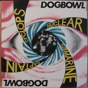Année de parution : 1991
Label : Shimmy Disc
Référence catalogue : Shimmy 043
Format : LP
Dogbowl
Cyclops Nuclear Submarine Captain |
 Année de parution : 1987 Année de parution : 1987
Label : Harvest, Harvest
Référence catalogue : SHSP 4105, 0C 062-07 088
Format : LP, Album, RP
Wire
154 |
|
|
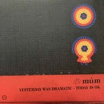Année de parution : 2019
Label : Morr Music
Référence catalogue : morr 058 re
Format : 3xLP, Album, RE, RM, 20t
múm
Yesterday Was Dramatic - Today Is Ok |
Année de parution : 2013
Label : Yep Roc Records
Référence catalogue : YEP-2358
Format : LP, Album, RE, 180
Morphine
Good |
 Année de parution : 2000 Année de parution : 2000
Label : Constellation
Référence catalogue : cst009
Format : LP, Album
A Silver Mt. Zion
He Has Left Us Alone But Shafts Of Light Sometimes Grace The Corner Of Our Rooms… |
 Année de parution : 1991 Année de parution : 1991
Label : LTM (4)
Référence catalogue : LTM 2303
Format : LP, Album
Tuxedomoon
The Ghost Sonata |
 Année de parution : 2018 Année de parution : 2018
Label : Virgin EMI Records
Référence catalogue : ENOLP6
Format : LP, Album, RM, RP, 180
Brian Eno
Ambient 1 (Music For Airports) |
|
|
 Année de parution : 2014 Année de parution : 2014
Label : Melodic
Référence catalogue : MELO091LP
Format : LP, Album, Ltd
King Of The Mountains
Zoetrope |
 Année de parution : 2014 Année de parution : 2014
Label : Naïve, Naïve
Référence catalogue : NV831861, M83-2 LP
Format : 2xLP, Album + CD, Album + RE
M83
Dead Cities, Red Seas & Lost Ghosts |
 Année de parution : 1985 Année de parution : 1985
Label : EMI
Référence catalogue : 1565056
Format : 12", Maxi
Talk Talk
Life's What You Make It |
Année de parution : 1985
Label : Epic, Epic
Référence catalogue : EPC 86318, 86318
Format : LP, Album, Gat
Sade
Promise |
 Année de parution : 1986 Année de parution : 1986
Label : Celluloid
Référence catalogue : CEL 6738
Format : LP, Album, RE
Urban Sax, Gilbert Artman
Urban Sax |
|
|
 Année de parution : 2016 Année de parution : 2016
Label : Posh Isolation
Référence catalogue : Posh Isolation 180
Format : LP, Album
Croatian Amor
Love Means Taking Action |
 Année de parution : 2019 Année de parution : 2019
Label : Warp Records, Duophonic Ultra High Frequency Disks
Référence catalogue : none, D-UHF-D17R
Format : 2xLP, Album, RE, RM + LP + Exp
Stereolab
Dots And Loops |
 Année de parution : 1983 Année de parution : 1983
Label : A&M Records
Référence catalogue : AMLX 63735
Format : LP, Album
The Police
Synchronicity |
 Année de parution : 2014 Année de parution : 2014
Label : Warp Records, Music70
Référence catalogue : WAP200R
Format : 12", EP, RE, RP, 140
Boards Of Canada
Trans Canada Highway |
Année de parution : 2014
Label : Young Turks
Référence catalogue : YT098
Format : 12", EP, RP
FKA Twigs
EP2 |
|
|
Année de parution : 2019
Label : Young Turks
Référence catalogue : YT191LP
Format : LP, Album
FKA Twigs
Magdalene |
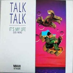Année de parution : 1984
Label : EMI
Référence catalogue : 1549236
Format : 12", Maxi
Talk Talk
It's My Life (US Mix) |
Année de parution : 1982
Label : Liberty, Liberty
Référence catalogue : 2C 068-83327, 2C068-83.327
Format : LP, Comp, RE
The Stranglers
The Collection 1977-1982 |
 Année de parution : 2013 Année de parution : 2013
Label : Music On Vinyl
Référence catalogue : MOVLP773
Format : LP, Album, RE, 180
Tim Buckley
Starsailor |
Année de parution : 2019
Label : Mute, Spoon Records
Référence catalogue : XLSPOON8_UK, XSPOON8
Format : LP, Album, Ltd, RE, Gre
Can
Ege Bamyasi |
|
|
 Année de parution : 1975 Année de parution : 1975
Label : Disques Cellier, Disques Cellier, Disques Cellier
Référence catalogue : 008, CELLIER 008, Cellier 008
Format : LP
Marcel Cellier Présente: Le Mystère Des Voix Bulgares
Le Mystère Des Voix Bulgares (Volume 1) |
Année de parution : 1981
Label : Polydor, 20th Century Fox, Polydor, 20th Century Fox
Référence catalogue : POLS 1026, 2383 602
Format : LP, Album, Ltd
Vangelis
Chariots Of Fire |
 Année de parution : 2017 Année de parution : 2017
Label : Teenage Menopause Records
Référence catalogue : PRC-327
Format : LP, Album
Xiu Xiu
Forget |
 Année de parution : 2015 Année de parution : 2015
Label : Grönland Records
Référence catalogue : LPGRON149
Format : LP, Album, RE, RM, Gat
Harmonia
Musik Von Harmonia |
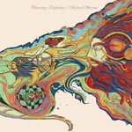Année de parution : 2019
Label : Emotional Rescue
Référence catalogue : ERC056
Format : LP, RE
Michael Stearns
Planetary Unfolding |
|
|
Année de parution : 2018
Label : Fire Records
Référence catalogue : FIRELP360
Format : LP, Album, RE
Pere Ubu
The Modern Dance |
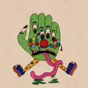Année de parution : 2015
Label : Domino
Référence catalogue : WIGLP326
Format : LP, Album
Dan Deacon
Gliss Riffer |
 Année de parution : 2017 Année de parution : 2017
Label : All Saints
Référence catalogue : WAST 054LP
Format : 2xLP
Laraaji
Bring On The Sun |
Année de parution : 1978
Label : Virgin
Référence catalogue : 2473750
Format : LP, Album, Fir
Devo
Q: Are We Not Men? A: We Are Devo! |
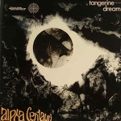Année de parution : 1975
Label : Ohr, Cosmic Music (2)
Référence catalogue : 940 509, 940.509
Format : LP, Album, Gat
Tangerine Dream
Alpha Centauri |
|
|
 Année de parution : 1975 Année de parution : 1975
Label : Virgin
Référence catalogue : 940517
Format : LP, Album
Tangerine Dream
Ricochet |
 Année de parution : 1976 Année de parution : 1976
Label : Virgin
Référence catalogue : 940 108/109
Format : 2xLP, Album, MP, RE, Gat
Tangerine Dream
Zeit |
 Année de parution : 1979 Année de parution : 1979
Label : Kuckuck
Référence catalogue : 44
Format : LP, Album
Deuter
Ecstasy |
 Année de parution : 2017 Année de parution : 2017
Label : Sacred Bones Records
Référence catalogue : SBR-174
Format : LP, Album, Ltd, Bla
Blanck Mass
World Eater |
 Année de parution : 2019 Année de parution : 2019
Label : Charly Records, Charly Records
Référence catalogue : CHARLY L 183, CHARLY L 178
Format : LP, Album, RE, RM, S/Edition, Cle
Gong
Flying Teapot (Radio Gnome Invisible Part 1) |
|
|
 Année de parution : 2016 Année de parution : 2016
Label : MG.ART
Référence catalogue : MG.ART 901
Format : LP, Album, RE
Manuel Göttsching
Inventions For Electric Guitar |
Année de parution : 1985
Label : Polydor
Référence catalogue : 2473105
Format : LP, Album, RE, Gat
Evangelos Papathanassiou
Opéra Sauvage |
Année de parution : 1975
Label : RCA Victor
Référence catalogue : RS 1025
Format : LP, Album, Gat
Vangelis
Heaven And Hell |
Année de parution : 2016
Label : Universal Music Group International, Stax
Référence catalogue : 25218411417
Format : LP, Album, RE, RM, 180
Isaac Hayes
Hot Buttered Soul |
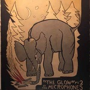Année de parution : 2013
Label : P.W. Elverum & Sun, Ltd.
Référence catalogue : ELV031
Format : 2xLP, Album, RE, RM, Gat
The Microphones
"The Glow" Pt. 2 |
|
|
Année de parution : 2017
Label : Ici D'Ailleurs
Référence catalogue : IDA027LP
Format : 2xLP, Album, RP, Gat
Matt Elliott
Drinking Songs |
 Année de parution : 1976 Année de parution : 1976
Label : ECM Records
Référence catalogue : ECM 1064/65 ST
Format : 2xLP, Album, RE, Gat
Keith Jarrett
The Köln Concert |
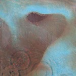Année de parution : 1971
Label : Harvest, Harvest
Référence catalogue : SHVL 795, 2 C 064 - 04917
Format : LP, Album, Gat
Pink Floyd
Meddle |
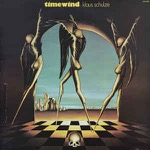Année de parution : 1975
Label : Virgin, Caroline Records, Virgin
Référence catalogue : 840 094, XBLY 840 094
Format : LP, Album
Klaus Schulze
Timewind |
Année de parution : 1978
Label : Warner Bros. Records
Référence catalogue : BSK 3152
Format : LP, Album, Promo, Ban
Michael Hoenig
Departure From The Northern Wasteland |
|
|
 Année de parution : 2007 Année de parution : 2007
Label : 4 Men With Beards
Référence catalogue : 4M 146
Format : LP, Album, RE
Tim Buckley
Lorca |
 Année de parution : 1978 Année de parution : 1978
Label : Kuckuck
Référence catalogue : 2375042
Format : LP, Album
Deuter
Haleakala |
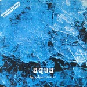Année de parution : 1974
Label : Virgin, Virgin
Référence catalogue : 840041, XBLY 840.041
Format : LP, Album
Edgar Froese
Aqua |
 Année de parution : 2019 Année de parution : 2019
Label : SlyVinyl Records
Référence catalogue : SVR13
Format : LP, Album, Dlx, Ltd, RE, Bla
Menomena
I Am The Fun Blame Monster |
 Année de parution : 2018 Année de parution : 2018
Label : Columbia, Legacy, Sony Music
Référence catalogue : 88875111931
Format : LP, Album, Ltd, RE, Red
Miles Davis
Sketches Of Spain |
|
|
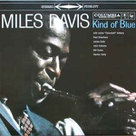Année de parution : 2018
Label : Columbia, Legacy
Référence catalogue : 19075883491
Format : LP, Album, Ltd, RE, Blu
Miles Davis
Kind Of Blue |
Année de parution : 2018
Label : Disques JMS
Référence catalogue : JMS 002
Format : LP, Album, RE
Henri Texier
Varech |
 Année de parution : ? Année de parution : ?
Label : Capitol Records
Référence catalogue : 5C 038-80181
Format : LP, Album, RE
The Band
The Band |
 Année de parution : 1981 Année de parution : 1981
Label : Editions EG
Référence catalogue : 2344168
Format : LP, Album
Penguin Cafe Orchestra
Penguin Cafe Orchestra |
Année de parution : 2016
Label : Reprise Records
Référence catalogue : 8122795846
Format : LP, Album, RE, 180
Captain Beefheart & The Magic Band
Lick My Decals Off, Baby |
|
|
 Année de parution : 2013 Année de parution : 2013
Label : Music On Vinyl, Elektra
Référence catalogue : MOVLP-772, EKS-74045
Format : LP, Album, RE, 180
Tim Buckley
Happy Sad |
 Année de parution : 1976 Année de parution : 1976
Label : Virgin
Référence catalogue : 940.526
Format : LP, Album
Tangerine Dream
Atem |
 Année de parution : 1970 Année de parution : 1970
Label : CBS
Référence catalogue : S 66246
Format : 2xLP, Album, Gat
Soft Machine
Third |
Année de parution : 1981
Label : Virgin, Virgin
Référence catalogue : V 2189, V2189
Format : LP, Album
Public Image Limited
The Flowers Of Romance |
 Année de parution : 1993 Année de parution : 1993
Label : Slash, London Records
Référence catalogue : LASHX 47, 857 347-1
Format : 12", EP
Grant Lee Buffalo
Buffalondon Live |
|
|
 Année de parution : 2014 Année de parution : 2014
Label : Music On Vinyl
Référence catalogue : MOVLP990
Format : LP, Album, RE, RM, 180
Grant Lee Buffalo
Fuzzy |
Année de parution : 1980
Label : Dindisc, Virgin
Référence catalogue : 102454
Format : 7", Single
Orchestral Manoeuvres In The Dark
Enola Gay |
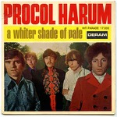Année de parution : 1967
Label : Deram
Référence catalogue : 17.000
Format : 7", Single, RP
Procol Harum
A Whiter Shade Of Pale |
 Année de parution : 1983 Année de parution : 1983
Label : Virgin, Virgin
Référence catalogue : 105.513, 105513
Format : 7", Single, RE
Ryuichi Sakamoto & David Sylvian
Forbidden Colours |
 Année de parution : 1970 Année de parution : 1970
Label : Apple Records, Apple Records
Référence catalogue : 2 C 006 04692 M, 2C 006-04692 M
Format : 7", Single, Mono
George Harrison
My Sweet Lord / Isn't It A Pity |
|
|
 Année de parution : 1976 Année de parution : 1976
Label : Capitol Records, Capitol Records
Référence catalogue : 2C010- 82119, 2C 010 - 82.119
Format : 7", Single
Kraftwerk
Radioactivity |
 Année de parution : 1976 Année de parution : 1976
Label : Capitol Records, Capitol Records
Référence catalogue : 2C.010-82119, 2C 010-82.119
Format : 7", Single
Kraftwerk
Radioactivity |
 Année de parution : 1975 Année de parution : 1975
Label : Héloïse Disques
Référence catalogue : 49.112
Format : 7", Single
Saint-Preux
Your Hair |
Année de parution : 2019
Label : UMC, Mo Wax, UMC, Mo Wax, Island Records
Référence catalogue : 4795722, 602577549885
Format : 2xLP, Album, Ltd, RE, Blu
DJ Shadow
Endtroducing... |
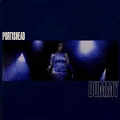Année de parution : 2008
Label : Go! Beat, Go! Beat
Référence catalogue : 828 522-1, 828 522 - 1
Format : LP, Album, RE, 180
Portishead
Dummy |
|
|
Année de parution : 2012
Label : EMI
Référence catalogue : EMCX 3506
Format : LP, Album, RE, 180 + DVD-V, Album, RE, NTSC
Talk Talk
The Colour Of Spring |
 Année de parution : 2009 Année de parution : 2009
Label : Elektra, Rhino Vinyl
Référence catalogue : 8122-79865-1
Format : LP, Album, RE, 180
The Doors
Strange Days |
Année de parution : 2017
Label : Rhino Records (2), Elektra
Référence catalogue : R1 318, 081227937867
Format : LP, Album, Mono, RE, Gat
Tim Buckley
Goodbye And Hello |
 Année de parution : 2019 Année de parution : 2019
Label : Spiral Records (7)
Référence catalogue : 8105269
Format : LP, Album, Ltd, RM, Cle
Ornette Coleman
Change Of The Century |
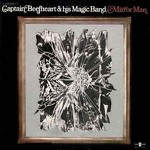Année de parution : 2014
Label : Friday Music, Buddah Records, Sony Music
Référence catalogue : FRM-5077, 88883710911
Format : LP, Album, RE, RM, 180
Captain Beefheart & The Magic Band
Mirror Man |
|
|
 Année de parution : 2009 Année de parution : 2009
Label : Elektra, Rhino Vinyl
Référence catalogue : 8122-79865-0
Format : LP, Album, RE, 180
The Doors
The Doors |
Année de parution : 2016
Label : Tamla
Référence catalogue : 600753534236
Format : LP, Album, Gat
Marvin Gaye
What's Going On |
Année de parution : 2015
Label : Music On Vinyl, Parlophone
Référence catalogue : MOVLP1257
Format : LP, Album, RE, 180
Kevin Ayers
Joy Of A Toy |
 Année de parution : 2014 Année de parution : 2014
Label : Spoon Records
Référence catalogue : XSPOON6/7
Format : 2xLP, Album, RE, RM, Gat
Can
Tago Mago |
 Année de parution : 2014 Année de parution : 2014
Label : Charly Records
Référence catalogue : CHARLY L 142
Format : LP, Album, RE, RM + LP, Album, Mono, RE, RM
Red Krayola With The Familiar Ugly
The Parable Of Arable Land |
|
|
 Année de parution : 2010 Année de parution : 2010
Label : Discipline Global Mobile, Panegyric, Inner Knot
Référence catalogue : KCLP1
Format : LP, Album, RE, 200
King Crimson
In The Court Of The Crimson King |
 Année de parution : 2009 Année de parution : 2009
Label : Barclay, Universal Music France
Référence catalogue : 530 709-4
Format : 2xLP, Album, RE
Alain Bashung
Bleu Pétrole |
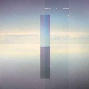Année de parution : 2016
Label : Infiné
Référence catalogue : IF 1038LP
Format : 2xLP, Album
Murcof x Vanessa Wagner
Statea |
 Année de parution : 2013 Année de parution : 2013
Label : ATCO Records, Rhino Records (2)
Référence catalogue : SD 33-234, 8122797161
Format : LP, Album, RE
Dr. John, The Night Tripper
Gris-Gris |
Année de parution : 2019
Label : Sacred Bones Records
Référence catalogue : SBR-220
Format : LP
Blanck Mass
Animated Violence Mild |
|
|
 Année de parution : 2019 Année de parution : 2019
Label : BMG, Mute
Référence catalogue : SUICIDELP01
Format : LP, Album, Dlx, Ltd, RE, Red
Suicide
Suicide |
 Année de parution : ? Année de parution : ?
Label : Philips
Référence catalogue : 6325182
Format : LP, Album, RE
Boris Vian
Chansons Possibles, Ou Impossibles |
 Année de parution : 2016 Année de parution : 2016
Label : Mom + Pop
Référence catalogue : MP243
Format : LP, Album, Tur
Bayonne
Primitives |
 Année de parution : 1975 Année de parution : 1975
Label : Virgin, Virgin
Référence catalogue : 940 505, XBLY 940 505
Format : LP, Album, Gat
Tangerine Dream
Rubycon |
 Année de parution : 2012 Année de parution : 2012
Label : Hyperdub
Référence catalogue : HDB059
Format : 12", EP
Burial
Kindred |
|
|
Année de parution : 2017
Label : Mvka, Radicalis
Référence catalogue : MVLP1006
Format : LP, Album, Ltd, Gre
Zeal And Ardor
Devil Is Fine |
 Année de parution : 2016 Année de parution : 2016
Label : Pink Floyd Records, Columbia
Référence catalogue : PFRLP1, 0825646493197
Format : LP, Album, RE, RM, 180
Pink Floyd
The Piper At The Gates Of Dawn |
 Année de parution : 0 Année de parution : 0
Label : Philips
Référence catalogue : 842.763 BY
Format : LP, Album
Ariel Ramirez, Los Fronterizos, Cantoría De La Basílica Del Socorro
Misa Criolla |
 Année de parution : 1970 Année de parution : 1970
Label : Rare Earth, Rare Earth
Référence catalogue : 2 C 062 91 006, 2C 062 - 91.006
Format : LP, Album
Rare Earth
Get Ready |
 Année de parution : 2010 Année de parution : 2010
Label : Grönland Records, Grönland Records
Référence catalogue : LPGRONIII, 5065001040757
Format : LP, Album, RE
Neu!
Neu! '75 |
|
|
 Année de parution : 2013 Année de parution : 2013
Label : Wah Wah Records, Wah Wah Records
Référence catalogue : LPS118, SGS118
Format : LP, Album, RE + 7", RE
Popol Vuh
Hosianna Mantra |
Année de parution : 1972
Label : Archiv Produktion
Référence catalogue : 2723014
Format : 3xLP
Gong Kebyar, Sebatu
Bali: Gamelan Music From Sebatu |
 Année de parution : 2019 Année de parution : 2019
Label : Village Green
Référence catalogue : VGEP053
Format : 12", EP, Cle
Snow Palms
Everything Ascending |
 Année de parution : 1982 Année de parution : 1982
Label : Warner Bros. Records, Warner Bros. Records
Référence catalogue : WB K 57 002, WB 57 002
Format : LP, Album
Laurie Anderson
Big Science |
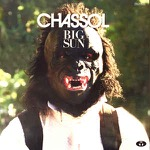Année de parution : 2015
Label : Tricatel
Référence catalogue : TRILPFR046
Format : LP, Album, Ltd
Chassol
Big Sun |
|
|
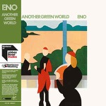Année de parution : 2017
Label : Virgin EMI Records, UMC
Référence catalogue : ENO2LP3, 00602557484182
Format : 2x12", Album, Ltd, RE, RM
Brian Eno
Another Green World |
 Année de parution : 2016 Année de parution : 2016
Label : Columbia, Sony Music, Legacy
Référence catalogue : 88875111901
Format : 2xLP, Album, RE, 180
Miles Davis
Bitches Brew |
Année de parution : 0
Label : Polydor
Référence catalogue : 2344080
Format : LP, Album, RE
Brian Eno
Taking Tiger Mountain (By Strategy) |
 Année de parution : 2009 Année de parution : 2009
Label : Virgin
Référence catalogue : V 2004
Format : LP, Album, Ltd, RE, RM, 180
Faust
Faust IV |
 Année de parution : 1975 Année de parution : 1975
Label : Virgin, Virgin
Référence catalogue : 840 045, XBLY 840.045
Format : LP, Album, RP
Klaus Schulze
Blackdance |
|
|
 Année de parution : 1979 Année de parution : 1979
Label : ECM Records, ECM Records
Référence catalogue : ECM 1137, 2301 137
Format : LP, Album
Eberhard Weber
Fluid Rustle |
 Année de parution : 1989 Année de parution : 1989
Label : Real World Records, Virgin
Référence catalogue : RWLP1, 303 539
Format : 2xLP, Album
Peter Gabriel
Passion |
 Année de parution : 1974 Année de parution : 1974
Label : Virgin, Virgin
Référence catalogue : 840018, 840.018
Format : LP, Album, RP
Mike Oldfield
Tubular Bells |
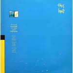Année de parution : 1979
Label : Atem
Référence catalogue : 7006
Format : LP, Album
This Heat
This Heat |
 Année de parution : 2015 Année de parution : 2015
Label : Erato, Warner Classics
Référence catalogue : 825646043798
Format : LP, Comp
Arvo Pärt
The Sound Of Arvo Pärt |
|
|
 Année de parution : 1972 Année de parution : 1972
Label : Warner Bros. Records, Warner Bros. Records
Référence catalogue : 46 127, 46.127
Format : LP, Album, RE
Various
Orange Mécanique |
Année de parution : 1984
Label : London Records
Référence catalogue : 410 220-2
Format : LP
Erik Satie - Pascal Rogé
3 Gymnopédies - Oeuvres Pour Piano - |
 Année de parution : 2017 Année de parution : 2017
Label : Young Turks
Référence catalogue : YT171
Format : 12", EP
Kamasi Washington
Harmony Of Difference |
 Année de parution : 1992 Année de parution : 1992
Label : Touch And Go
Référence catalogue : TG090
Format : 12", EP, RE
Big Black
Bulldozer |
 Année de parution : 1985 Année de parution : 1985
Label : Island Records, Island Records, ZTT
Référence catalogue : 206 492, 206 492-620
Format : LP, Album
The Art Of Noise
(Who's Afraid Of?) The Art Of Noise |
|
|
 Année de parution : 1974 Année de parution : 1974
Label : Virgin, Virgin
Référence catalogue : 840 030, 840.030
Format : LP, Album
Tangerine Dream
Phaedra |
 Année de parution : 2012 Année de parution : 2012
Label : Caprice Records
Référence catalogue : CAP 21828
Format : 2xLP, Album, RE, RM, Gat
Don Cherry
Organic Music Society |
Année de parution : 2016
Label : Laced Records
Référence catalogue : 302 067 410 1
Format : 2xLP, Album
65daysofstatic
No Man's Sky: Music For An Infinite Universe |
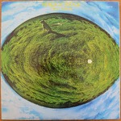Année de parution : ?
Label : Virgin
Référence catalogue : 2933714
Format : LP, Album, RE
Mike Oldfield
Hergest Ridge |
Année de parution : 1969
Label : Columbia Masterworks
Référence catalogue : MS 7315
Format : LP, Album
Terry Riley
A Rainbow In Curved Air |
|
|
 Année de parution : 2016 Année de parution : 2016
Label : Mute
Référence catalogue : STUMM386
Format : 2xLP, Album, Red
Arca
Mutant |
 Année de parution : 2014 Année de parution : 2014
Label : Harvest, Harvest, Harvest
Référence catalogue : RPI-543315, 0825646310791, SHVL 765
Format : LP, Album, RE, Gat
Syd Barrett
The Madcap Laughs |
 Année de parution : 2019 Année de parution : 2019
Label : Zappa Records, Zappa Records
Référence catalogue : ZR 3841Z-1, ZR 3841-1
Format : LP, Album, Ltd, RE, RM, Hot
Frank Zappa
Hot Rats |
 Année de parution : 1978 Année de parution : 1978
Label : Brain, Brain
Référence catalogue : 0080.023-2, 0080.023
Format : 2xLP, Album
Klaus Schulze
"X" |
 Année de parution : 2011 Année de parution : 2011
Label : Buddah Records, Music On Vinyl, RCA
Référence catalogue : MOVLP343
Format : LP, Album, RE, 180 + LP, 180
Captain Beefheart And The Magic Band
Safe As Milk |
|
|
 Année de parution : 2017 Année de parution : 2017
Label : Posh Isolation
Référence catalogue : PI198
Format : LP, Album, RM
Erik Enocksson
Farväl Falkenberg |
 Année de parution : 2008 Année de parution : 2008
Label : Domino
Référence catalogue : REWIGLP40
Format : LP, Album, RE
Robert Wyatt
Rock Bottom |
Année de parution : 2015
Label : Columbia, Legacy, Music On Vinyl
Référence catalogue : 88875111941, MOVLP028
Format : LP, Album, RE, 180
Miles Davis
In A Silent Way |
 Année de parution : 2007 Année de parution : 2007
Label : Lilith
Référence catalogue : LR138
Format : LP, Album, RE, Cle
Faust
Faust |
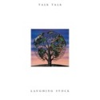Année de parution : 2011
Label : Ba Da Bing!, Universal Music Special Markets
Référence catalogue : BING-074, B0015253-01
Format : LP, Album, RE
Talk Talk
Laughing Stock |
|
|
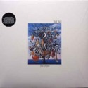Année de parution : 2012
Label : Parlophone, Parlophone
Référence catalogue : PCSDX 105, 5099932778717
Format : LP, Album, RE, 180 + DVD-V, Album, RE, NTSC
Talk Talk
Spirit Of Eden |
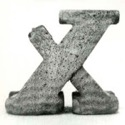Année de parution : 2018
Label : Planet Mu
Référence catalogue : ZIQ397
Format : 2xLP, Album, Pin
Ital Tek
Bodied |
 Année de parution : 2009 Année de parution : 2009
Label : Carpark Records
Référence catalogue : CAK48
Format : 2xLP, Album
Dan Deacon
Bromst |
Année de parution : 1976
Label : Asylum Records, Asylum Records
Référence catalogue : 13 084, 13.084
Format : 7", Single
Eagles
Hotel California |
 Année de parution : 1971 Année de parution : 1971
Label : Warner Bros. Records
Référence catalogue : 46098
Format : LP
Michel Legrand
Summer Of '42 |
|
|
 Année de parution : ? Année de parution : ?
Label : Polydor
Référence catalogue : 2489113
Format : LP, Album, RE, RP
Evangelos Papathanassiou
L'Apocalypse Des Animaux |
 Année de parution : ? Année de parution : ?
Label : Polydor
Référence catalogue : 2489113
Format : LP, Album, RE, RP
Evangelos Papathanassiou
L'Apocalypse Des Animaux |
 Année de parution : 2016 Année de parution : 2016
Label : Rykodisc, Music On Vinyl
Référence catalogue : MOVLP1783
Format : LP, Album, RE, 180
Morphine
Cure For Pain |
 Année de parution : 2015 Année de parution : 2015
Label : Ici D'Ailleurs
Référence catalogue : IDA099LP
Format : 2xLP, Album, RE
Diabologum
#3 |
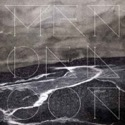Année de parution : 2013
Label : Ici D'Ailleurs
Référence catalogue : IDA090LP
Format : 2xLP, Album + CD, Album
Mendelson
Mendelson |
|
|
 Année de parution : 2009 Année de parution : 2009
Label : Barclay, Universal Music France
Référence catalogue : 065 315-1
Format : 2xLP, Album, RE
Alain Bashung
L'Imprudence |
 Année de parution : 2016 Année de parution : 2016
Label : Maison Barclay, Back To Black, Universal
Référence catalogue : 537 098-1
Format : LP, Album, Ltd, 180
Alain Bashung
Fantaisie militaire |
Année de parution : 2000
Label : Constellation
Référence catalogue : cst012
Format : 2xLP, Album
Godspeed You Black Emperor!
Lift Your Skinny Fists Like Antennas To Heaven |
 Année de parution : 2002 Année de parution : 2002
Label : Constellation, Constellation
Référence catalogue : cst 024, CST024-1
Format : 2xLP, Album
Godspeed You Black Emperor!
Yanqui U.X.O. |
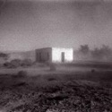Année de parution : 2012
Label : Constellation
Référence catalogue : CST081-1
Format : LP + 7" + Album
Godspeed You Black Emperor!
'Allelujah! Don't Bend Ascend |
|
|
 Année de parution : 1981 Année de parution : 1981
Label : Rough Trade
Référence catalogue : ROUGH 26
Format : LP, Album
This Heat
Deceit |
Année de parution : 2018
Label : Gobstopper Records (2)
Référence catalogue : GOB028
Format : 12", EP
Mr. Mitch
Primary Progressive |
 Année de parution : 2016 Année de parution : 2016
Label : Universal Music France, Mercury
Référence catalogue : 479 561-3
Format : LP, Album, RE
Daniel Darc
Crèvecœur |
Année de parution : 2017
Label : Virgin EMI Records
Référence catalogue : ENOLP4
Format : LP, Album, RE, RM
Brian Eno
Before And After Science |
Année de parution : 2017
Label : Columbia Masterworks, Caribou Records, Legacy
Référence catalogue : MS 7335, 88985440161
Format : LP, Album, RE
Moondog
Moondog |
|
|
Année de parution : 2004
Label : Touch And Go, Touch And Go
Référence catalogue : T&G lp#64, tg64
Format : LP, Album, RE
Slint
Spiderland |
 Année de parution : 2016 Année de parution : 2016
Label : Thrill Jockey
Référence catalogue : Thrill 013
Format : LP, Album, RP
Tortoise
Tortoise |
 Année de parution : 2015 Année de parution : 2015
Label : Touch And Go
Référence catalogue : TG93
Format : LP, Album, RE, RM
Big Black
Atomizer |
 Année de parution : 1976 Année de parution : 1976
Label : Pausa Records
Référence catalogue : PR 7016
Format : LP, Album, Gat
Gian Piero Reverberi
Timer |
 Année de parution : 0 Année de parution : 0
Label : Trianon
Référence catalogue : CTRE 6138
Format : LP
Antonín Dvořák, Berliner Philharmoniker, Rudolf Kempe
Symphonie Du Nouveau Monde N°5 En Mi Mineur Op.95 |
|
|
 Année de parution : 1990 Année de parution : 1990
Label : Real World Records, Virgin
Référence catalogue : RWLP9, 210 170
Format : LP, Album
Various
The Mahabharata - Original Soundtrack |
 Année de parution : 1972 Année de parution : 1972
Label : Fontana
Référence catalogue : 6325.302
Format : LP, Album, Gat
Alan Stivell
Renaissance De La Harpe Celtique |
 Année de parution : 2019 Année de parution : 2019
Label : Lo Recordings
Référence catalogue : LO159LP
Format : 2xLP, Album, Comp
Various
Spaciousness: Music Without Horizons |
 Année de parution : 2007 Année de parution : 2007
Label : Eisenwald Tonschmiede
Référence catalogue : EISEN027
Format : LP, Album, Ltd, Pic
Drudkh
Forgotten Legends |
Année de parution : 2018
Label : Astralwerks
Référence catalogue : 2557951677
Format : LP, Album, RE, RM
Brian Eno
Here Come The Warm Jets |
|
|
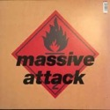Année de parution : 2016
Label : Virgin, Circa, Wild Bunch Records
Référence catalogue : 5700960
Format : LP, Album, RE, 180
Massive Attack
Blue Lines |
 Année de parution : 2018 Année de parution : 2018
Label : Gondwana Records
Référence catalogue : GONDEP029
Format : 12", EP
Sunda Arc
Flicker |
 Année de parution : 2017 Année de parution : 2017
Label : Telephone Explosion Records
Référence catalogue : TER045
Format : LP, Album, Dlx, RE
Steve Roach
Structures From Silence |
 Année de parution : 1976 Année de parution : 1976
Label : Contona Music
Référence catalogue : LP-7601
Format : LP
Various
Disco Explosion |
 Année de parution : 1979 Année de parution : 1979
Label : Kuckuck
Référence catalogue : 9
Format : LP, Album, RE
Deuter
Aum |
|
|
 Année de parution : 1982 Année de parution : 1982
Label : Kuckuck, Kuckuck
Référence catalogue : 053, KUCKUCK 053
Format : LP, Album, RE
Kitaro
Oasis |
 Année de parution : 1977 Année de parution : 1977
Label : Sky Records
Référence catalogue : sky 007
Format : LP, Album, RP
Michael Rother
Flammende Herzen |
 Année de parution : 2015 Année de parution : 2015
Label : Verve Records, Verve Records
Référence catalogue : 371 710-8, 0602537171088
Format : LP, Album, RE, RM, RP, 45t
The Velvet Underground & Nico
The Velvet Underground & Nico |
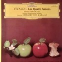Année de parution : 0
Label : Deutsche Grammophon
Référence catalogue : 2530296
Format : LP, Album, Gat
Antonio Vivaldi, Michel Schwalbé & Berliner Philharmoniker, Herbert von Karajan
Les Quatre Saisons |
 Année de parution : 1976 Année de parution : 1976
Label : Deutsche Grammophon
Référence catalogue : 2530659
Format : LP, Album, Gat
Frédéric Chopin - Maurizio Pollini
Polonaises |
|
|
 Année de parution : 1984 Année de parution : 1984
Label : WEA, WEA
Référence catalogue : WX1, 240335-1
Format : LP, Album, Bla
Howard Jones
Human's Lib |
 Année de parution : ? Année de parution : ?
Label : Atlantic, Atlantic, Atlantic
Référence catalogue : ATL 50 532, SD 19 212, K 50 532
Format : LP, Album, RE
AC/DC
If You Want Blood You've Got It |
Année de parution : 1983
Label : Polydor
Référence catalogue : 810 987-1
Format : LP, Album
Accept
Restless And Wild |
 Année de parution : 1973 Année de parution : 1973
Label : Philips
Référence catalogue : 6325020
Format : LP, Gat
Serge Lama
Je Suis Malade |
Année de parution : 1979
Label : Harvest
Référence catalogue : 2C 168-63 410/11
Format : 2xLP, Album, Gat
Pink Floyd
The Wall |
|
|
Année de parution : 1983
Label : Harvest, Harvest
Référence catalogue : 2C 070-65 042, 2C 070-65042
Format : LP, Album, Gat
Pink Floyd
The Final Cut |
 Année de parution : 1969 Année de parution : 1969
Label : Columbia
Référence catalogue : 2C 062-04096
Format : LP, Album, 1st
Pink Floyd
Soundtrack From The Film "More" |
 Année de parution : 1985 Année de parution : 1985
Label : A&M Records
Référence catalogue : 395014-1
Format : LP, Album, Emb
Supertramp
Brother Where You Bound |
 Année de parution : 1979 Année de parution : 1979
Label : A&M Records
Référence catalogue : AMLK 64747
Format : LP, Album
Supertramp
Breakfast In America |
 Année de parution : ? Année de parution : ?
Label : CBS, CBS
Référence catalogue : CBS 69003, S 69003
Format : LP, Comp, RE
Simon & Garfunkel
Simon And Garfunkel's Greatest Hits |
|
|
 Année de parution : 1964 Année de parution : 1964
Label : La Voix De Son Maître
Référence catalogue : CAN 140/2
Format : 3xLP, Box
Maria Callas, Nicolai Gedda, Robert Massard And Andréa Guiot With Orchestre National De L'Opéra De Paris Conducted By Georges Prêtre
Carmen |
Année de parution : ?
Label : CBS
Référence catalogue : 51003
Format : LP
Raymond Trouard - Frédéric Chopin
Les 14 Valses |
Année de parution : 0
Label : Trianon
Référence catalogue : CTRE 6123
Format : LP
Ludwig van Beethoven, Aline Van Barentzen
Trois Sonates - Clair De Lune - Pathétique - Appassionata |
 Année de parution : 1984 Année de parution : 1984
Label : Forlane
Référence catalogue : UM 6527
Format : LP
Ensemble Instrumental De France, Philip Bride
L'Adagio D'Albinoni |
 Année de parution : 1979 Année de parution : 1979
Label : Plaisir Du Classique
Référence catalogue : 2M 155-16345/6
Format : 2xLP
Wolfgang Amadeus Mozart, Eric Heidsieck, Orchestre De La Société Des Concerts Du Conservatoire, André Vandernoot
Concertos Pour Piano Nos 20, 23, 25 Et 27 |
|
|
 Année de parution : 1997 Année de parution : 1997
Label : Constellation
Référence catalogue : cst003
Format : LP, Album, RE, Tra
Godspeed You Black Emperor!
F♯ A♯ ∞ |
 Année de parution : 2015 Année de parution : 2015
Label : Ván
Référence catalogue : VÁN97
Format : 7", S/Sided, Etch, RP, Gol
Urfaust
Die Erste Levitation |
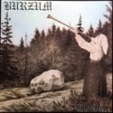Année de parution : 2008
Label : Back On Black
Référence catalogue : BOBV089LP
Format : 2xLP, Album, RE, Gat
Burzum
Filosofem |
 Année de parution : 2008 Année de parution : 2008
Label : Vinyl Lovers
Référence catalogue : 900044
Format : LP, Album, RE, 180
The Velvet Underground
White Light/White Heat |
Année de parution : 2009
Label : Ván
Référence catalogue : VAN23
Format : 12", EP, Whi
Urfaust
Einsiedler |
|
|
Année de parution : 2004
Label : Constellation
Référence catalogue : cst006
Format : 12", EP, RE
Godspeed You Black Emperor!
Slow Riot For New Zero Kanada E.P. |
Année de parution : 2010
Label : Grönland Records, Grönland Records
Référence catalogue : LPGRONI, 5065001040733
Format : LP, Album, RE, Whi
Neu!
Neu! |
Année de parution : 2015
Label : DOL
Référence catalogue : DOL701H
Format : LP, Album, RE, 180
Charles Mingus
Blues & Roots |
 Année de parution : 2016 Année de parution : 2016
Label : Recital (2)
Référence catalogue : Recital Seventeen
Format : LP, Album, Ltd
Daniel W. Schmidt And The Berkeley Gamelan Ensemble
In My Arms, Many Flowers |
 Année de parution : ? Année de parution : ?
Label : 4AD
Référence catalogue : CAD 905
Format : LP, Album, RE, 180
Pixies
Doolittle |
|
|
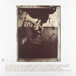Année de parution : ?
Label : 4AD
Référence catalogue : CAD 803
Format : LP, Album, RE
Pixies
Surfer Rosa |
 Année de parution : 2003 Année de parution : 2003
Label : Touch And Go
Référence catalogue : TG252
Format : 12", EP
TV On The Radio
Young Liars |
Année de parution : 1977
Label : Harvest, Harvest
Référence catalogue : SHVL 815, 0C 064-98 434
Format : LP, Album, Gat
Pink Floyd
Animals |
 Année de parution : ? Année de parution : ?
Label : Vertigo, Vertigo
Référence catalogue : 6366 109, 847 903 1
Format : LP, Album, Gat
Black Sabbath
Black Sabbath |
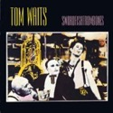Année de parution : 2016
Label : Island Records
Référence catalogue : 42284246910
Format : LP, Album, RE, RM, 180
Tom Waits
Swordfishtrombones |
|
|
Année de parution : 2016
Label : Thrill Jockey
Référence catalogue : THRILL 025
Format : LP, Album, RE, 180
Tortoise
Millions Now Living Will Never Die |
 Année de parution : 2018 Année de parution : 2018
Label : True Panther Sounds
Référence catalogue : TPS-003
Format : LP, Album
Bliss Signal
Bliss Signal |
Année de parution : 2002
Label : Sundazed Music
Référence catalogue : LP 5079
Format : LP, Album, Mono, RE
Booker T & The MG's
Green Onions |
Année de parution : 2014
Label : Temporary Residence Limited
Référence catalogue : TRR233LP
Format : LP, Album
Watter
This World |
 Année de parution : 2009 Année de parution : 2009
Label : Elektra, Rhino Vinyl
Référence catalogue : 8122-79865-5
Format : LP, Album, RE, 180
The Doors
L.A. Woman |
|
|
 Année de parution : ? Année de parution : ?
Label : Harvest, Harvest
Référence catalogue : 2C 068-05249, 2C 068-05.249
Format : LP, Album, RE, Gat
Pink Floyd
The Dark Side Of The Moon |
 Année de parution : 1975 Année de parution : 1975
Label : Harvest, Harvest
Référence catalogue : 2C 068-96918, 2 C 068-96918
Format : LP, Album
Pink Floyd
Wish You Were Here |
 Année de parution : 1973 Année de parution : 1973
Label : Parlophone
Référence catalogue : PCS 7027
Format : LP, Album
The Beatles
Sgt. Pepper's Lonely Hearts Club Band |
 Année de parution : 2014 Année de parution : 2014
Label : ATP Recordings
Référence catalogue : ATPRLP28
Format : 2xLP, Album, RE, 180
Fuck Buttons
Street Horrrsing |
Année de parution : ?
Label : Ariola
Référence catalogue : 87 131 IU
Format : LP, Album, Quad, RE
Eberhard Schoener
Meditation |
|
|
 Année de parution : ? Année de parution : ?
Label : Brain
Référence catalogue : 1069
Format : LP, Album, RE
Eroc
Eroc |
Année de parution : 1980
Label : Kuckuck
Référence catalogue : 46
Format : LP, Album
Peter Michael Hamel
Colours Of Time |
Année de parution : 1981
Label : Kuckuck
Référence catalogue : 049/050
Format : 2xLP, Album
Deuter
Silence Is The Answer / Buddham Sharnam Gachchami |
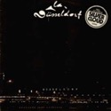Année de parution : ?
Label : Nova (6), Nova (6)
Référence catalogue : 6.22 550, 6.22550 AO
Format : LP, Album, RP
La Düsseldorf
La Düsseldorf |
Année de parution : 1978
Label : Sky Records, Sky Records
Référence catalogue : SKY 017, sky 017
Format : LP, Album
Wolfgang Riechmann
Wunderbar |
|
|
 Année de parution : ? Année de parution : ?
Label : Kuckuck
Référence catalogue : 2375040
Format : LP, Album, RE
Deuter
Celebration |
 Année de parution : 1990 Année de parution : 1990
Label : ЭРИО
Référence catalogue : С60-00003
Format : LP, Album
Аукцыон
Дупло |
Année de parution : 2019
Label : Duophonic Ultra High Frequency Disks, Warp Records
Référence catalogue : D-UHF-D02R
Format : 2xLP, Album, RE, RM + LP + Exp
Stereolab
Transient Random-Noise Bursts With Announcements |
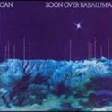Année de parution : 2014
Label : Spoon Records, Mute
Référence catalogue : XSPOON10, XSPOON10_UK
Format : LP, Album, RE, RM, 180
Can
Soon Over Babaluma |
 Année de parution : 2018 Année de parution : 2018
Label : Kranky
Référence catalogue : KRANK213
Format : 2xLP, Album
Dedekind Cut
Tahoe |
|
|
 Année de parution : 2017 Année de parution : 2017
Label : XL Recordings
Référence catalogue : XLLP834
Format : LP, Album
Arca
Arca |
 Année de parution : 1967 Année de parution : 1967
Label : Barclay, Barclay
Référence catalogue : 071157, 071.157
Format : 7", EP
The Jimi Hendrix Experience
The Wind Cries Mary / Purple Haze |
 Année de parution : 2016 Année de parution : 2016
Label : Fiction Records, Fiction Records, Polydor, Polydor, Universal Music Catalogue, Universal Music Catalogue
Référence catalogue : 532 456-3, 060075324563 (7)
Format : 2xLP, Album, RE, RM, 180
The Cure
Disintegration |
 Année de parution : 2016 Année de parution : 2016
Label : Knitting Factory Records
Référence catalogue : KFR-2009-1
Format : LP, Album, RE
Fela Kuti & The Africa 70
Gentleman |
 Année de parution : 2017 Année de parution : 2017
Label : The Point Of Departure Recording Company
Référence catalogue : PODR001LP
Format : 2xLP, Album
Alessandro Cortini
Avanti |
|
|
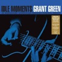Année de parution : 2013
Label : DOL
Référence catalogue : DOL1026HG
Format : LP, Album, RE, 180
Grant Green
Idle Moments |
 Année de parution : 2020 Année de parution : 2020
Label : Fact Of Being
Référence catalogue : FoB-004LP
Format : LP, Album, RE
Iasos
Angelic Music |
 Année de parution : 2015 Année de parution : 2015
Label : Pan European Recording
Référence catalogue : PAN044
Format : 2xLP, Album
Flavien Berger
Léviathan |
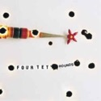Année de parution : 2013
Label : Domino, Domino
Référence catalogue : rewiglp88, REWIGLP88
Format : 2xLP, 180 + CD + Album, RE
Four Tet
Rounds |
 Année de parution : 2003 Année de parution : 2003
Label : Ninja Tune
Référence catalogue : ZEN 77
Format : 2xLP, Album
Fog
Ether Teeth |
|
|
Année de parution : 2003
Label : Leaf, Leaf
Référence catalogue : BAY 26VX, BAY 26V
Format : LP, Album, Ltd, Cle
Manitoba
Up In Flames |
 Année de parution : ? Année de parution : ?
Label : Cinq 7, Wagram Music
Référence catalogue : 3363276
Format : 2xLP, Album, RE
Dominique A.
L'horizon |
 Année de parution : 2012 Année de parution : 2012
Label : Cinq 7, Wagram Music
Référence catalogue : 3253296
Format : LP, Album, Ltd
Rover
Rover |
 Année de parution : 2015 Année de parution : 2015
Label : DreamWorks Records, DreamWorks Records
Référence catalogue : 0600753377154, 600753377154
Format : LP, Album, RE, 180
Eels
Beautiful Freak |
 Année de parution : 2019 Année de parution : 2019
Label : Trovarobato
Référence catalogue : TRB 041 V
Format : LP, Album, RP, Gat
IOSONOUNCANE
DIE |
|
|
 Année de parution : 2014 Année de parution : 2014
Label : Numero Group, Numero Group
Référence catalogue : NUM059, N 059
Format : 2xLP, Album
Jordan De La Sierra
Gymnosphere: Song Of The Rose |
 Année de parution : 2016 Année de parution : 2016
Label : Capitol Records, ATO Records
Référence catalogue : 880882276515
Format : LP, Album, Gat
Jim James
Eternally Even |
 Année de parution : 2004 Année de parution : 2004
Label : Touch And Go
Référence catalogue : tg254
Format : LP + LP, S/Sided, Etch + Album
TV On The Radio
Desperate Youth, Blood Thirsty Babes |
Année de parution : 2016
Label : Holodeck
Référence catalogue : HD035
Format : LP, Album, Ltd
Troller
Graphic |
Année de parution : 2017
Label : Editions Mego
Référence catalogue : Emego247
Format : LP, Album
Loke Rahbek, Frederik Valentin
Buy Corals Online |
|
|
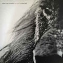Année de parution : 2019
Label : Infiné
Référence catalogue : iF2077
Format : 12", EP
Vanessa Wagner
[Inland] Versions |
 Année de parution : 2017 Année de parution : 2017
Label : XL Recordings
Référence catalogue : XLLP834
Format : LP, Album
Arca
Arca |
 Année de parution : 2003 Année de parution : 2003
Label : Definitive Jux
Référence catalogue : DJX46
Format : 12"
RJD2
The Horror |
 Année de parution : 2003 Année de parution : 2003
Label : Ninja Tune
Référence catalogue : ZEN 77
Format : 2xLP, Album
Fog
Ether Teeth |
 Année de parution : 2015 Année de parution : 2015
Label : Black Milk Music
Référence catalogue : BMM017
Format : LP, Album, Ltd
M.A BEAT!
Drowning For Love |
|
|
 Année de parution : 2018 Année de parution : 2018
Label : Kompakt
Référence catalogue : KOMPAKT 393
Format : 3xLP, Album, Ltd, Cle + Box
Kasper Bjørke Quartet
The Fifty Eleven Project |
 Année de parution : 2019 Année de parution : 2019
Label : Mexican Summer
Référence catalogue : MEX256
Format : LP
Jefre Cantu-Ledesma
Tracing Back The Radiance |
Année de parution : 2020
Label : Posh Isolation
Référence catalogue : Posh Isolation 231
Format : LP, Album
Frederik Valentin & Loke Rahbek
Elephant |
 Année de parution : 2015 Année de parution : 2015
Label : Planet Mu
Référence catalogue : ZIQ339
Format : 12", EP
Claude Speeed
Sun Czar Temple |
Année de parution : 2017
Label : Posh Isolation
Référence catalogue : Posh Isolation 188
Format : LP, Album
Kyo
I Musik |
|
|
 Année de parution : 1972 Année de parution : 1972
Label : Pilz (2)
Référence catalogue : 20 21276-9
Format : LP, Album
Popol Vuh
In Den Gärten Pharaos |
 Année de parution : 2017 Année de parution : 2017
Label : Warp Records
Référence catalogue : WARPLP288
Format : 2xLP, Album
Mount Kimbie
Love What Survives |
Année de parution : 2017
Label : Beatnik Creative
Référence catalogue : BEATNC00050
Format : LP, Ltd, Tra
Turtle
Human |
Année de parution : 2019
Label : Music On Vinyl, Warner Bros. Records
Référence catalogue : MOVLP2487
Format : LP, Album
Beaver & Krause
Gandharva |
Année de parution : 2006
Label : Lex Records
Référence catalogue : LEX 040 LP
Format : 2xLP, Album
Subtle
For Hero: For Fool |
|
|
 Année de parution : 2018 Année de parution : 2018
Label : Pan European Recording, Pan European Recording
Référence catalogue : PAN025, PAN038
Format : 2x12", Comp, Ltd, RE
Flavien Berger
Glitter Gaze - Mars Balnéaire |
Année de parution : 1978
Label : Ralph Records
Référence catalogue : RR1174
Format : LP, Album, Gre
The Residents
Not Available |
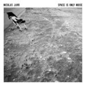Année de parution : 2012
Label : Circus Company
Référence catalogue : CCS055-2
Format : LP, Album, RE
Nicolas Jaar
Space Is Only Noise |
Année de parution : 2016
Label : Public House Recordings
Référence catalogue : Public House008 / sharbon001LP
Format : LP, Album, Ltd
Manyfingers
Our Worn Shadow |
Année de parution : 2018
Label : Ninja Tune
Référence catalogue : ZEN248
Format : LP, Album, 180
Young Fathers
Cocoa Sugar |
|
|
 Année de parution : 2015 Année de parution : 2015
Label : Big Dada Recordings
Référence catalogue : BD269
Format : LP, Album
Roots Manuva
Bleeds |
Année de parution : 2018
Label : RCA, Loud Records, Legacy, Sony Music
Référence catalogue : 19075883381
Format : LP, Album, Ltd, RE, Yel
Wu-Tang Clan
Enter The Wu-Tang (36 Chambers) |
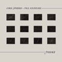Année de parution : 2019
Label : Emotional Rescue, Mountains In The Sea
Référence catalogue : ERC070, MITS001
Format : LP, Album, RE
Chris Spheeris • Paul Voudouris
Passage |
 Année de parution : 2015 Année de parution : 2015
Label : Consouling Sounds
Référence catalogue : SOUL0050
Format : LP, Album + CD, Album + Ltd
Dirk Serries
Unseen Descending And Lamentations |
Année de parution : ?
Label : Demon Records
Référence catalogue : DEMREC312
Format : LP, Album, col
Aswad
Dub: The Next Frontier - Color Vinyl |
|
|
 Année de parution : 2020 Année de parution : 2020
Label : Music On Vinyl, Sony Music
Référence catalogue : MOVLP2546
Format : 2xLP, Album, RE
Global Communication
76:14 |
 Année de parution : 1982 Année de parution : 1982
Label : Kuckuck
Référence catalogue : 56
Format : LP, Album
Deuter
Cicada |
 Année de parution : 2016 Année de parution : 2016
Label : Tricatel
Référence catalogue : TRILPFR007
Format : LP, Album, Ltd
Michel Houellebecq
Présence Humaine |
 Année de parution : 2019 Année de parution : 2019
Label : Duophonic Ultra High Frequency Disks, Warp Records
Référence catalogue : D-UHF-D05R
Format : 2xLP, Album, RE, RM + LP + Exp
Stereolab
Mars Audiac Quintet |
Année de parution : 2012
Label : Ninja Tune
Référence catalogue : ZEN185
Format : LP, Album
Grasscut
Unearth |
|
|
Année de parution : 2020
Label : Posh Isolation
Référence catalogue : Posh Isolation 238
Format : LP, Album
Croatian Amor
All In The Same Breath |
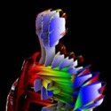Année de parution : 2017
Label : Rvng Intl.
Référence catalogue : RVNGNL44
Format : 12"
Visible Cloaks
Lex |
 Année de parution : 2018 Année de parution : 2018
Label : Apollo
Référence catalogue : AMBLP3922
Format : 2xLP, Album, RE, RM
Aphex Twin
Selected Ambient Works 85-92 |
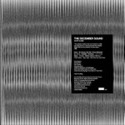Année de parution : 2012
Label : Cranes Records
Référence catalogue : Cranes Records 04
Format : 2xLP, Album, Ltd, Gra
The December Sound
The December Sound (The Silver Album) |
Année de parution : 2020
Label : Temporary Residence Limited, Temporary Residence Limited
Référence catalogue : TRR346, TRR346LP-C1
Format : LP, Album, Ltd, Bro
Inventions
Continuous Portrait |
|
|
Année de parution : 2015
Label : Cinq 7
Référence catalogue : 3319776
Format : 2xLP, RE
Dominique A.
La Musique / La Matière |
 Année de parution : 2014 Année de parution : 2014
Label : Naïve, Naïve
Référence catalogue : NV831761, M83-1 LP
Format : 2xLP, Album, RE + CD, Album, RE
M83
M83 |
 Année de parution : 2014 Année de parution : 2014
Label : Barclay
Référence catalogue : 067 507 1
Format : LP, Album, RE
Louise Attaque
Louise Attaque |
Année de parution : 1979
Label : Harvest
Référence catalogue : 2 C 008-63494
Format : 7", Single
Pink Floyd
Another Brick In The Wall (Part II) |
 Année de parution : 1989 Année de parution : 1989
Label : WEA
Référence catalogue : 257 672-0
Format : 12"
Phil Collins
In The Air Tonight (88' Remix) And (Extended Version) |
|
|
 Année de parution : ? Année de parution : ?
Label : Atlantic
Référence catalogue : ATL 50 735
Format : LP, Album, RE
AC/DC
Back In Black |
Année de parution : 1972
Label : RCA Victor, RCA Victor
Référence catalogue : 443.039, 443039
Format : LP, Album
Ennio Morricone
Il Était Une Fois La Révolution (Bande Originale Du Film) |
 Année de parution : 1976 Année de parution : 1976
Label : Disques Festival
Référence catalogue : ALBUM 222
Format : 2xLP, Comp, Gat
Ennio Morricone
Bandes Et Musiques Originales |
Année de parution : 1983
Label : Supraphon
Référence catalogue : 204918
Format : LP, Album, RE, RM, Gat
Antonín Dvořák - The Czech Philharmonic Orchestra, Václav Neumann
Symphonie N° 9 "Du Nouveau Monde" |
 Année de parution : 1979 Année de parution : 1979
Label : Forlane
Référence catalogue : UM 3500
Format : LP, Album
Gioacchino Rossini, Kurt Redel, Staatsphilharmonie Rheinland-Pfalz
Les Ouvertures |
|
|
Année de parution : 1971
Label : Philips
Référence catalogue : 6500153
Format : LP, gat
Franz Schubert - Sándor Végh - Sándor Zöldy - Georges Janzer - Paul Szabo - Pablo Casals
Quintette A Cordes, Op. 163 |
Année de parution : 0
Label : Decca, Decca
Référence catalogue : 7.054, 7.054 B
Format : LP
Johann Sebastian Bach - Elly Ameling, Helen Watts, Peter Pears, Tom Krause, Lübecker Kantorei, Hans-Jürgen Wille, Stuttgarter Kammerorchester, Karl Münchinger
Oratorio De Noël |
Année de parution : 1983
Label : EMI America, EMI America
Référence catalogue : 2C 070-400165, 2C 070-400.165
Format : LP, Album
David Bowie
Let's Dance |
 Année de parution : 1977 Année de parution : 1977
Label : A&M Records
Référence catalogue : AMLH 64306
Format : LP, Album, RE, Gat
Supertramp
Indelibly Stamped |
Année de parution : 1987
Label : A&M Records
Référence catalogue : 393908-1
Format : LP, Album
Joe Jackson
Will Power |
|
|
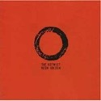Année de parution : 2010
Label : City Slang
Référence catalogue : SLANG9550064
Format : LP, Album, RE, 180
The Notwist
Neon Golden |
 Année de parution : 2013 Année de parution : 2013
Label : DOL
Référence catalogue : DOL979HG
Format : LP, Album, RE, Gat
Wes Montgomery
Boss Guitar |
 Année de parution : 2017 Année de parution : 2017
Label : DOL
Référence catalogue : DOL881HG
Format : LP, Album, RE, 180
Kenny Burrell
Midnight Blue |
 Année de parution : 2019 Année de parution : 2019
Label : Thrill Jockey
Référence catalogue : THRILL 050
Format : 2xLP, Album, RE, Cle
Tortoise
TNT |
 Année de parution : 2020 Année de parution : 2020
Label : Flenser Records, Enemies List Home Recordings
Référence catalogue : FR42, EL04
Format : 2xLP, Ltd, RE, RM, RP
Have A Nice Life
Deathconsciousness |
|
|
 Année de parution : ? Année de parution : ?
Label : Polydor
Référence catalogue : 2489113
Format : LP, Album, RE, RP
Evangelos Papathanassiou
L'Apocalypse Des Animaux |
Année de parution : 2017
Label : Columbia, Columbia
Référence catalogue : 475959 1, COL 475959 1
Format : LP, Album, RE
Nas
Illmatic |
 Année de parution : 2016 Année de parution : 2016
Label : Mute, BMG
Référence catalogue : Stumm172
Format : 2xLP, Album, Ltd, RE, 180
Moby
Play |
 Année de parution : 2012 Année de parution : 2012
Label : Studio Media (3)
Référence catalogue : VNL 12224 LP
Format : LP, Album, RE, 180
Sonny Rollins
Saxophone Colossus |
 Année de parution : 2012 Année de parution : 2012
Label : Studio Media (3)
Référence catalogue : VNL 12222 LP
Format : LP, Album, RE, 180
John Coltrane
My Favorite Things |
|
|
 Année de parution : 2016 Année de parution : 2016
Label : Infiné
Référence catalogue : IF 1038LP
Format : 2xLP, Album
Murcof x Vanessa Wagner
Statea |
Année de parution : 2010
Label : Ici D'Ailleurs
Référence catalogue : IDA068
Format : 2xLP, Album
Chapelier Fou
613 |
Année de parution : 2012
Label : Morr Music
Référence catalogue : MM111
Format : LP, Album
Orcas
Orcas |
Année de parution : 2018
Label : Universeul
Référence catalogue : VINYLE 07
Format : LP, Album, RP
Odezenne
Dolziger Str. 2 |
 Année de parution : 2020 Année de parution : 2020
Label : Jazzman, Jazzman, Jazzman
Référence catalogue : JMAN LP122, JMANLP122, JMANLP 122
Format : 3xLP, Comp
Various
Spiritual Jazz XII (Impulse!) (Esoteric, Modal & Progressive Jazz From The Impulse! Label 1962-75) |
|
|
 Année de parution : 2020 Année de parution : 2020
Label : Editions Mego
Référence catalogue : EMEGO289
Format : 2xLP, Album
KMRU
Peel |
 Année de parution : 2017 Année de parution : 2017
Label : Ideologic Organ
Référence catalogue : SOMA025
Format : 2xLP, Album
The Necks
Unfold |
 Année de parution : 2020 Année de parution : 2020
Label : Warp Records
Référence catalogue : WARPLP304X
Format : LP, Album, Ltd, Sil
Yves Tumor
Heaven To A Tortured Mind |
Année de parution : 2019
Label : Hands In The Dark
Référence catalogue : HIDT043
Format : LP, Album
Mondkopf
How Deep Is Our Love? |
 Année de parution : 2017 Année de parution : 2017
Label : Blue Note
Référence catalogue : BST 84140
Format : LP, Album, RE, 180
Joe Henderson
Page One |
|
|
 Année de parution : 2016 Année de parution : 2016
Label : Columbia
Référence catalogue : none
Format : LP, Album, RE, 180
Charles Mingus
Mingus Ah Um |
 Année de parution : 2016 Année de parution : 2016
Label : Blue Note, Blue Note, Blue Note
Référence catalogue : BST 84112, BST-84112, 84112
Format : LP, Album, RE, 180
Dexter Gordon
Go! |
 Année de parution : 2016 Année de parution : 2016
Label : Impulse!
Référence catalogue : AS-9183
Format : LP, Album, RE, Gat
Charlie Haden
Liberation Music Orchestra |
 Année de parution : 2016 Année de parution : 2016
Label : Verve Records, DeAgostini
Référence catalogue : MGV-8005, MG V-8005
Format : LP, Album, RE, RP, 180
The Charlie Parker Quartet
Now's The Time |
 Année de parution : 2016 Année de parution : 2016
Label : Blue Note
Référence catalogue : BST 84194
Format : LP, Album, RE, 180
Wayne Shorter
Speak No Evil |
|
|
 Année de parution : 2016 Année de parution : 2016
Label : Blue Note
Référence catalogue : BST-81595
Format : LP, Album, RE, RM, RP, 180
Cannonball Adderley
Somethin' Else |
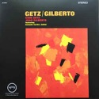Année de parution : 2016
Label : Verve Records, Verve Records
Référence catalogue : V6-8545, 009 8545
Format : LP, Album, RE, 180
Stan Getz / João Gilberto Featuring Antonio Carlos Jobim
Getz / Gilberto |
Année de parution : 2016
Label : Blue Note, Blue Note
Référence catalogue : 4163, BLP 4163
Format : LP, Album, Mono, RE, 180
Eric Dolphy
Out To Lunch! |
Année de parution : 2016
Label : United Artists Jazz
Référence catalogue : UAJ 14017
Format : LP, Album, RE, 180
Duke Ellington • Charles Mingus • Max Roach
Money Jungle |
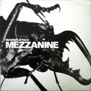Année de parution : 2017
Label : Circa, Circa, Virgin, Virgin
Référence catalogue : WBRLP4, 7243 8 45599 1 5
Format : 2xLP, Album, RE
Massive Attack
Mezzanine |
|
|
Année de parution : 1974
Label : Virgin, Virgin
Référence catalogue : 840 025/26, 840.025/26
Format : 2xLP, Album
Kevin Coyne
Marjory Razorblade |
Année de parution : 2020
Label : EMI, Modular Recordings, Astralwerks
Référence catalogue : 3504363
Format : 2xLP, Album, Ltd, 180
The Avalanches
We Will Always Love You |
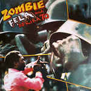Année de parution : 2014
Label : Knitting Factory Records
Référence catalogue : KFR 2025-1
Format : LP, Album, RE
Fela Kuti And Africa 70
Zombie |
Année de parution : 1972
Label : Fontana
Référence catalogue : 6399005
Format : LP, Album
Alan Stivell
À L'Olympia |
Année de parution : ?
Label : Fontana
Référence catalogue : 6399008
Format : LP, Album, RP
Alan Stivell
Reflets |
|
|
Année de parution : 2020
Label : Alter
Référence catalogue : ALT51
Format : LP, Album, Ltd, RM
Cremation Lily
The Processes And Instruments Of Normal People; Trying And Failing, Falling And Water Running |
Année de parution : 2020
Label : Pan (3)
Référence catalogue : PAN112LPC2
Format : LP, Album, Ltd, Red
Eartheater
Phoenix: Flames Are Dew Upon My Skin |
Année de parution : 2015
Label : Sacred Bones Records
Référence catalogue : SBR-136
Format : 2xLP, Album
Blanck Mass
Dumb Flesh |
Année de parution : 2017
Label : Blue Note
Référence catalogue : 5768336
Format : 2xLP, Album
Tony Allen
The Source |
Année de parution : 2017
Label : Blue Note
Référence catalogue : 574439 4
Format : 10", EP, Ltd
Tony Allen
A Tribute To Art Blakey And The Jazz Messengers |
|
|
Année de parution : 2017
Label : Luaka Bop, Luaka Bop
Référence catalogue : LBOP-087, 6 80899 0087-1-6
Format : 2xLP, Comp
Alice Coltrane
The Ecstatic Music Of Alice Coltrane Turiyasangitananda |
Année de parution : 2018
Label : Blue Note Lab
Référence catalogue : 778630 6
Format : 10", EP, Ltd
Tony Allen, Jeff Mills
Tomorrow Comes The Harvest |
Année de parution : 2019
Label : Gondwana Records
Référence catalogue : GONDLP034
Format : LP, Album
Portico Quartet
Memory Streams |
Année de parution : 2017
Label : Milan
Référence catalogue : 399 858-2
Format : 2xLP, Album, RE, RM, 30t
Geinoh Yamashirogumi
Akira Symphonic Suite |
Année de parution : 2017
Label : Beacon Sound
Référence catalogue : BNSD027
Format : LP, Album
Lau Nau
Poseidon |
|
|
Année de parution : 2018
Label : Fontana, Fontana
Référence catalogue : 660.213 MR, 0060075379639
Format : 10", Album, RE + 2x10" + Dlx, RM
Miles Davis
Ascenseur Pour L'Échafaud |
Année de parution : 2016
Label : Bureau B
Référence catalogue : BB 239
Format : LP, Album, RE
Adelbert Von Deyen
Atmosphere |
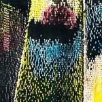Année de parution : 2020
Label : Superior Viaduct
Référence catalogue : SV170
Format : LP, Album, Ltd, RE, Cle
Flaming Tunes
Flaming Tunes |
Année de parution : 2017
Label : Posh Isolation
Référence catalogue : Posh Isolation 195
Format : LP, Album
Khalil
The Water We Drink |
Année de parution : 2018
Label : Posh Isolation
Référence catalogue : PI215
Format : LP, Album
Kyo W/ Jeuru
All The Same Dream |
|
|
Année de parution : 2016
Label : Posh Isolation
Référence catalogue : POSH ISOLATION 174
Format : LP
Kyo
Aktuel Musik |
 Année de parution : 2016 Année de parution : 2016
Label : Posh Isolation
Référence catalogue : POSH ISOLATION 174
Format : LP
Kyo
Aktuel Musik |
 Année de parution : 2020 Année de parution : 2020
Label : Ninja Tune
Référence catalogue : ZEN12547
Format : Vinyl, 12", EP, Mispress, Stereo
박혜진 Park Hye Jin
How Can I |
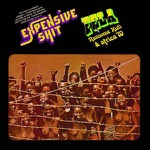Année de parution : 2014
Label : Knitting Factory Records
Référence catalogue : KFR2015-1
Format : Vinyl, LP, Album, Reissue
Fela Ransome Kuti & Africa 70
Expensive Shit |
Année de parution : 2011
Label : Erased Tapes Records
Référence catalogue : ERATP032LP
Format : Vinyl, LP, Album, Gatefold
A Winged Victory For The Sullen
A Winged Victory For The Sullen |
|
|
Année de parution : 2021
Label : Archives
Référence catalogue : ARCH-V008
Format : Vinyl, LP, Album, Limited Edition
Warmth
The Darkest Place |
Année de parution : 2017
Label : Sacred Bones Records
Référence catalogue : SBR-184
Format : Vinyl, LP, Album
Zola Jesus
Okovi |
Année de parution : 2014
Label : Spoon Records
Référence catalogue : XSPOON9
Format : Vinyl, LP, Album, Reissue, Remastered
Can
Future Days |
|